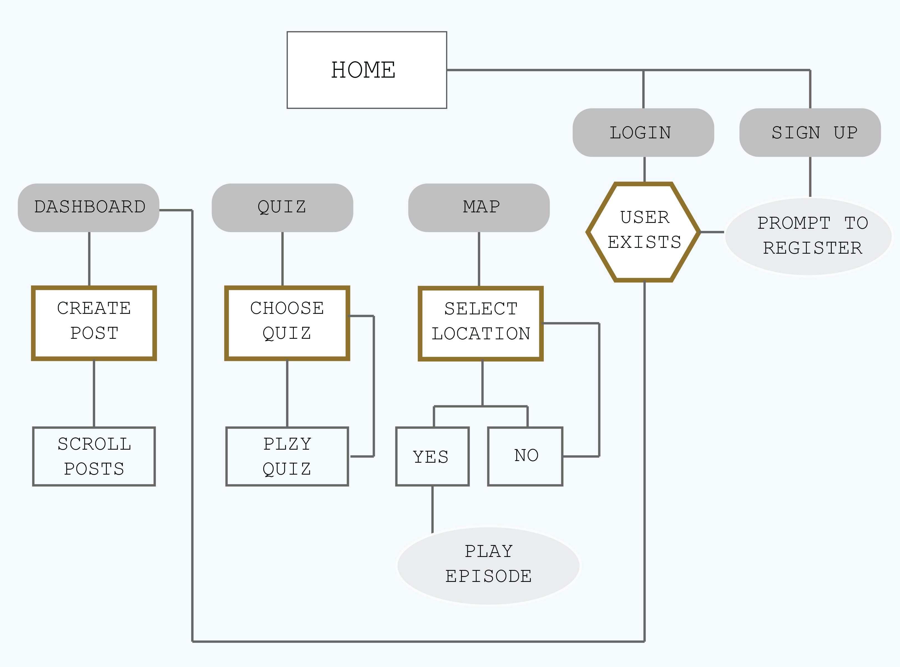

I decided to work with the Womens’ Suffrage real life proposal to create a basis for my app. That was the subject that I found the most interest in and what I felt would also help inspire an original idea as that concept hasn’t been played around with much. I thought about the categories of people who would be the most interested in the Womens’ Suffrage movement and I originally thought of targeting youth women because from my perspective I’m currently seeing a lot of young women wanting to take action and learn and make a difference. But then I thought, rather than making an app for people who are already interested and educated, why not make an app to educate people and get them interested. That’s why I decided to create an app that is a learning tool that teachers can use to teach their students about gender equality and the Womens’ Suffrage movement in New Zealand.
The concept of the app is an interactive experience learning tool for children/primary schools to learn about gender equality and the Womens’ Suffrage movement in New Zealand. Teachers and Students have their own separate logins where the teachers have more control over the admin and editing and the students only have viewing privileges. There are three main pages on the app:
- The first one is the Home Page where the teacher can post announcements about tasks and projects that are to be completed and when new quizzes become unlocked, and students can also post any questions they have that both other students and the teacher can answer.
- The interactive stories are the key feature of the app. This is what teaches the students about the history of the movement and gender equality. The interactive stories run through a map of New Zealand. In each episode of the story it takes place in a different location, and although there in general information in each episode, the episode will include information and facts specific to that area, and the names of women in that area who signed the petition.
- Following the episodes, there are quizzes to be completed. These are comprehensive questions to make sure the students where involved in the episodes and can recount the information. After the quiz is over, the students will also have access to the correct answers and the teacher can ask the class to discuss certain events that happened within the episode. The quizzes are unlocked when the episodes are completed. It is good for the students to be able to download the app and run through the episodes and learn at their own pace.
